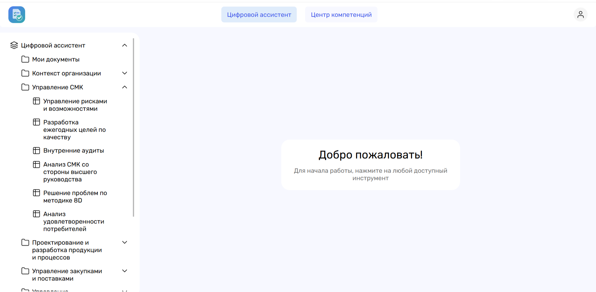
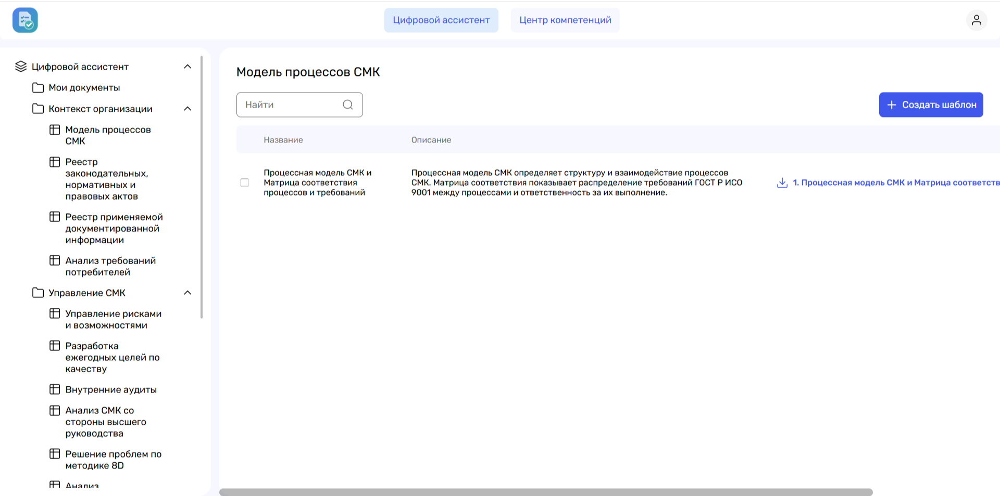

Услуги
- Внедрение и развитие системы менеджмента качества
- Подготовка к аудитам второй стороны
- Выявление и оценка рисков появления несоответствий в изделиях и процессах, разработка корректирующих и предупреждающих действий
- Управление качеством поставок комплектующих
- Оценка эффективности технологического оборудования (OEE)
- Автоматизация процессов управления качеством
- Внедрение программных модулей для управления рисками, несоответствиями, качеством поставок, нормированием труда и OEE
- Формирование внутренней экспертизы, методик и лучших практик в области управления качеством и производительностью труда
- Обучение и передача компетенций
- Технико-экономическое обоснование проектов в области управления качеством
- Диагностика текущего уровня цифровизации процессов управления качеством
Модули платформы


